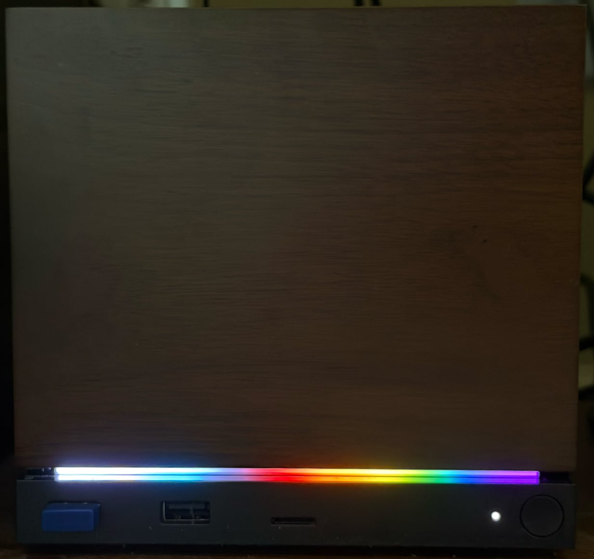

Easily set the Steam Machine's LED light bar to colored patterns. A single-file Python script with no dependencies, for SteamOS.On your Steam Machine, switch to Desktop mode and open a terminal (Konsole), then run:
curl -LO https://davidcwga.github.io/steampride/steampride.gz gunzip steampride.gz chmod +x steampride
That's it. SteamOS already includes Python, and the script needs nothing else. Optionally move it somewhere on your PATH:
mkdir -p ~/.local/bin mv steampride ~/.local/bin/
Steam only reads the LED configuration when it starts, so steampride will offer to shut Steam down before applying a pattern. Your new colors appear the next time Steam starts (for example when you return to Game mode).
steampride pride # the classic rainbow flag steampride trans # transgender flag steampride --list # show all presets, in color steampride red white blue # your own stripes steampride '#ff8800' -b 60% # solid color, 60% brightness steampride --off # turn the light bar off steampride --show # show the current LED settings
Presets: pride, progress, trans, bi, pan, nonbinary, lesbian, ace, aro, agender, genderfluid, genderqueer, intersex.
Custom patterns take two or more COLOR[:WIDTH]
bands (colors can be CSS names, hex, or r,g,b triplets), or a
pattern file in ~/.config/steampride/patterns. Use
-n for a dry run, and see steampride
--help for everything else.
steampride edits only the LED settings inside Steam's
localconfig.vdf, leaving every other byte of the file
untouched. It refuses to write if the file doesn't look exactly as
expected, writes atomically, and keeps a daily backup next to the
original.